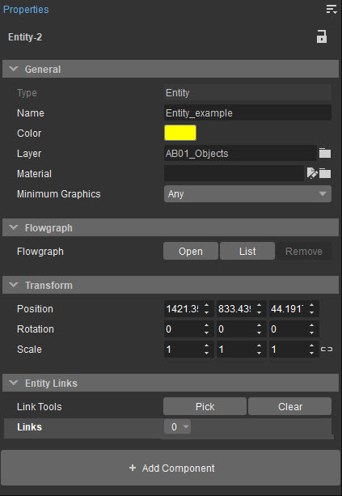
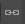

Overview
The Properties tool shows a number of relevant options and operators for the selected object(s). Therefore, when selecting multiple objects that all share certain properties, then those properties will be shown. Furthermore, changing the properties will then change them for all of the selected objects.
Which options are shown depends on the object/entity etc. is selected.

The properties that are shown for every object are:
Menu
The Menu can be accessed via the 
General
Option | Description |
|---|---|
Type | Shows what type the selected object is (Brush, GeomEntity, etc.). |
Name | Shows the name of the object. |
Color | Sets the color for certain types of 3D indicators (such as AIReinforcementSpot) or for example the 3D indicators used for some object types such as lamps (when Show Object Icons is disabled) in Edit -> Preferences -> Viewports -> General. |
Layer | Shows the layer the selected object belongs to. |
Material | Lets users choose a different material for the selected object. |
Minimum Graphics | Changes the minimum spec the object is visible in (choose from LowSpec, MedSpec, etc). |
Clicking the
Flowgraph
| Option | Description |
|---|---|
| Flowgraph | Allows linking the entity to a Flowgraph. |
Transform
Option | Description |
|---|---|
Position | The position of the object in relation to the X, Y and Z coordinates. |
Rotation | How much the object is rotated in relation to the X, Y and Z axes. |
Scale | The scale of the object in relation to the X, Y and Z axes. |
Entity Links
| Setting | Description |
|---|---|
| Link Tools | Allows linking multiple entities together. |
| Links | Shows existing entity links. |
By default, all Scale values are linked. For instance, when the scale of the X-axis is changed from 1 to 2, the Y and Z axes will also change to 2. The scaling axes can be unlinked by clicking the link icon 
Group
Several objects can be added into a group so that they can be modified together. This is done by selecting all the objects which are supposed to be added to the group then right-clicking and choosing the Create Group option.
If then this group is selected, the following options will appear in the Properties panel:
Option | Description |
|---|---|
Ungroup | Removes the group. |
Open | Opens up the group so that the objects in it can be selected and moved around separately. The objects that are moved will still be part of the group. This button changes to Close when the group is opened; locking the objects in their position within the group. |
Properties
The rest of the properties in the Properties tool can vary widely depending on the object/entity that has been selected. For Entity type objects, properties defined in the Lua script attached to the Entity will also appear here.
Add Component
The Add Component button allows users to add logical components to entities. This button only appears in the Properties panel when an entity is selected and shows all components available for creation, including user-made ones. For more information about the components that can be added to an entity, please refer to the Entity Components - Components Panel page.